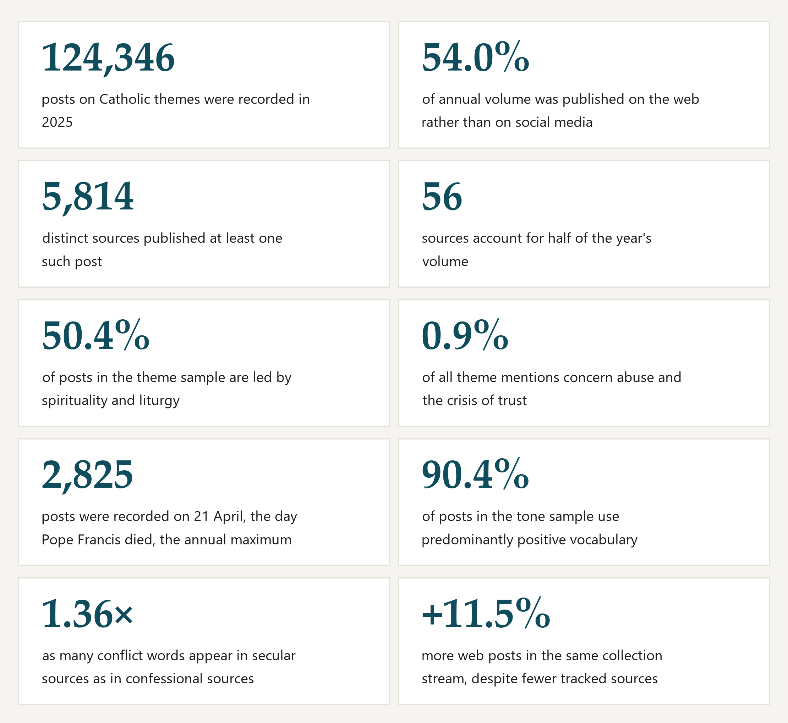
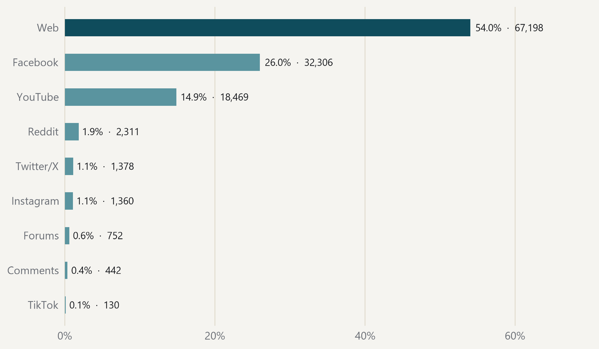
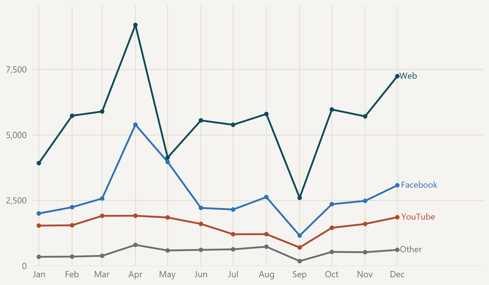
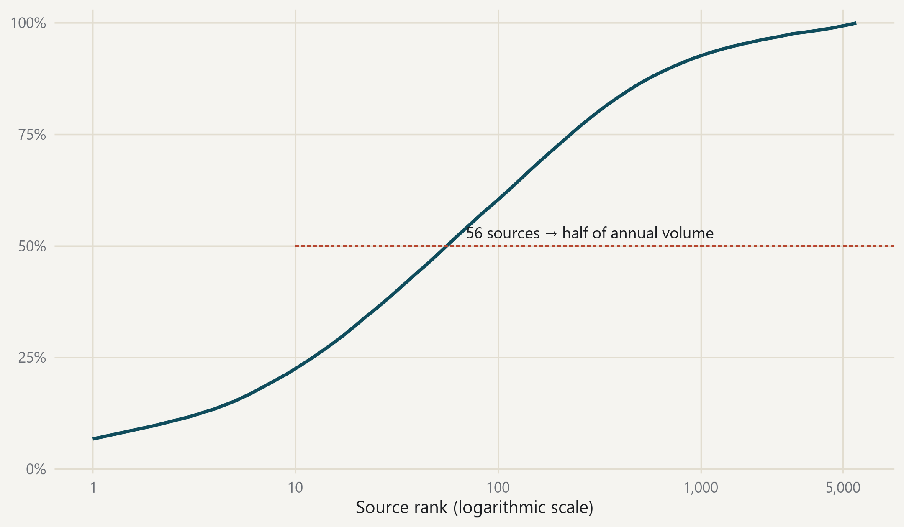
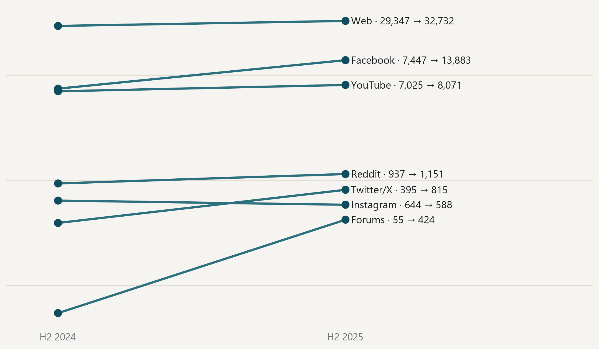
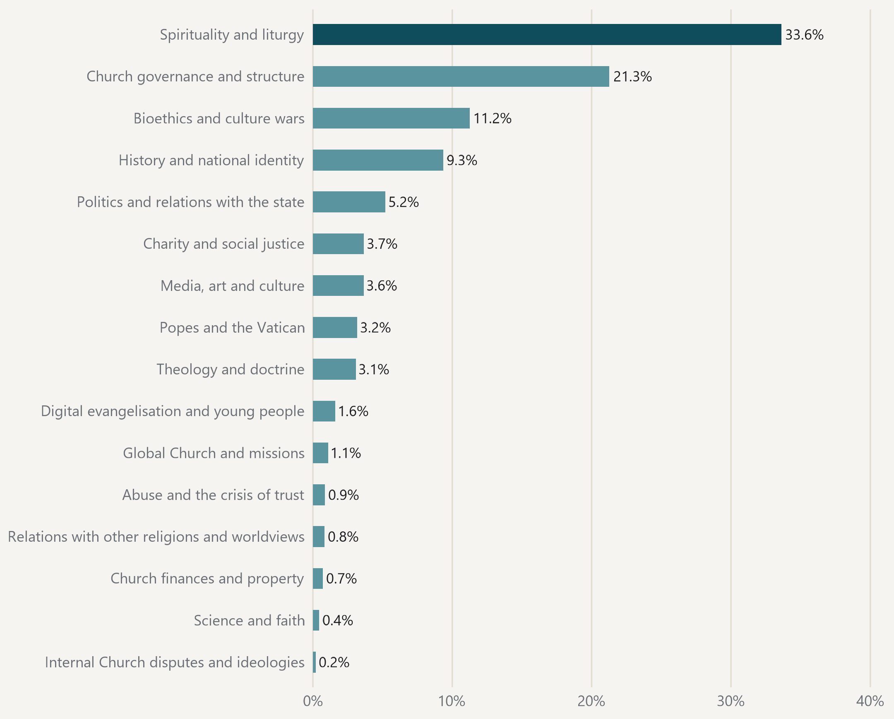
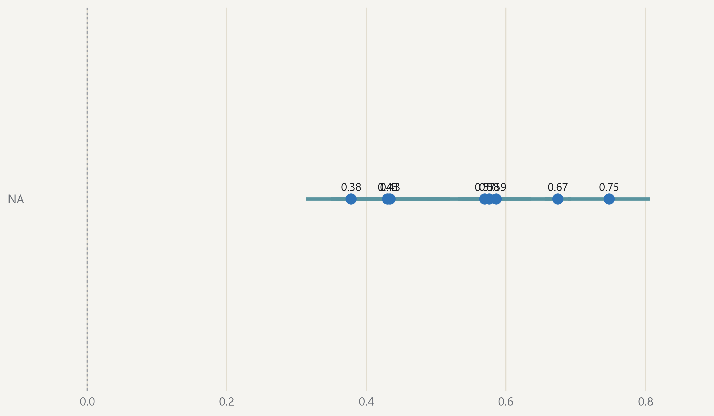
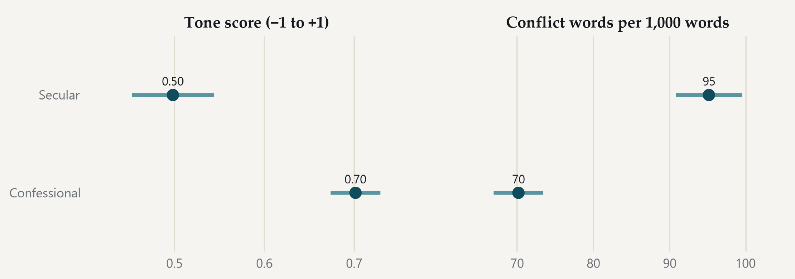
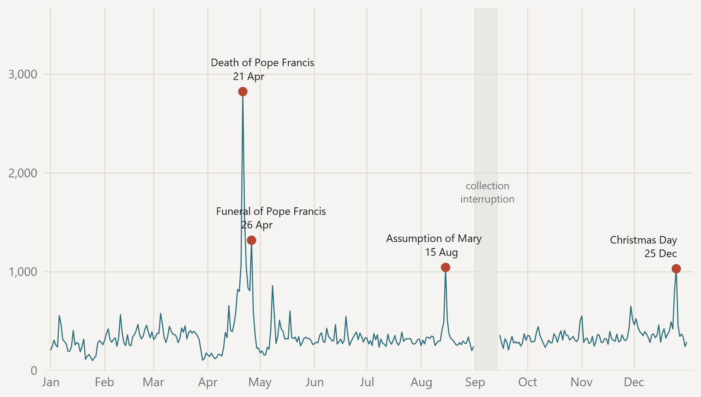

Catholic themes in the digital space
Annual review 2025
Catholic media, digital media, Croatia, DigiKat
Orientation
The review in 60 seconds
The review summarises what the Croatian digital space recorded on Catholic themes during 2025.
- The corpus recorded 124,346 posts.
- The web accounts for 54.0% of annual volume.
- The leading theme appears in 50.4% of processed posts.
What follows. The review describes recorded presence, thematic emphasis and the language of posts in the corpus.
What does not follow. It does not measure audience trust, author beliefs or the truth of an individual claim.
Continue to the findings summarySummary
This is the first DigiKat annual review. It describes what the Croatian digital space published on Catholic themes during 2025, how much of it there is, who publishes it, what it is about and in what tone.
The database covers the Croatian digital media space as a whole, from websites and social networks to video and comments. It contains 413,985 posts collected 1 January 2021 to 11 June 2026. The 2025 calendar year accounts for 124,346 posts.
- We recorded 124,346 posts on Catholic themes during 2025.
- The web remains the main venue and carries 54.0% of annual volume.
- The posts come from 5,814 distinct sources, a highly dispersed space.
- Even so, just 56 sources account for half of the year’s volume.
- Spirituality and liturgy lead the year, dominant in 50.4% of posts in the theme sample.
- Abuse and the crisis of trust account for 0.9% of all dictionary mentions.
- On the day Pope Francis died we recorded 2,825 posts, the most in the whole year.
- Predominantly positive vocabulary appears in 90.4% of posts in the tone sample.
- Secular sources carry 1.36× as many conflict words as confessional ones.
- In the second half of the year the web carried +11.5% more than a year earlier.
Every number in this review is computed from the database and can be reproduced. None was entered by hand.
A post is one database record: an article, social-media post, video or comment. A source is the media outlet or account from which a post came, not an individual person.
Ten numbers from 2025

Every number is computed from the corpus; none was entered by hand. · Source: DigiKat official corpus. Calendar year 2025.
Ecosystem map
How large is the space?
In 2025 we recorded 124,346 posts on Catholic themes. More than half, 54.0%, appeared on the web, on websites and portals rather than social media. Facebook accounts for 26.0% and YouTube for 14.9%.
The web carries more than half of all recorded posts

Platform share of 124,346 posts from 2025, with the absolute count. · Source: DigiKat official corpus. Calendar year 2025.
Where were the posts published?
| Platform | Posts | Share | Interactions | Reach |
|---|---|---|---|---|
| Web | 67,198 | 54.0% | 4,493,667 | 121,037,110 |
| 32,306 | 26.0% | 4,467,362 | 398,595,788 | |
| YouTube | 18,469 | 14.9% | 3,366,728 | 80,862,905 |
| 2,311 | 1.9% | not recorded | not recorded | |
| Twitter/X | 1,378 | 1.1% | 26,308 | 5,201,689 |
| 1,360 | 1.1% | 470,690 | 4,006,437 | |
| Forums | 752 | 0.6% | not recorded | not recorded |
| Comments | 442 | 0.4% | not recorded | not recorded |
| TikTok | 130 | 0.1% | 145,624 | 2,344,773 |
Source: DigiKat official corpus. ‘Not recorded’ means the platform measure is absent from the collected data, not that no interactions or reach occurred. Posts, interactions and reach answer three different questions and are not added together.
Post count and reach are not the same. Facebook accounts for roughly a quarter of posts but 65.1% of recorded reach. The web publishes more; networks reach wider.
April carries the annual peak; the September dip is a collection interruption

Monthly post count for the three largest platforms and all others combined. · Source: DigiKat official corpus. Calendar year 2025. September is incomplete because collection stopped for its first fourteen days. Direct labels make the lines readable without colour.
Who leads?
Posts come from 5,814 distinct sources. The space is highly dispersed, but that dispersion can mislead: the top ten sources account for 22.5% of the year, while 56 sources produce half of annual volume. The rest is a long tail in which thousands of sources publish only a few times a year.
A small number of sources carries a great deal, but the tail is long

Cumulative share of annual volume by source rank; 5,814 sources in total. · Source: DigiKat official corpus. Calendar year 2025.
Which sources publish most?
| # | Source | Posts | Share of year | Label |
|---|---|---|---|---|
| 1 | hkm.hr | 8,397 | 6.75% | confessional |
| 2 | Bitno.net | 3,695 | 2.97% | confessional |
| 3 | Net.hr | 2,207 | 1.77% | secular |
| 4 | Laudato | 2,135 | 1.72% | confessional |
| 5 | novizivot.net | 2,078 | 1.67% | confessional |
| 6 | VJERA U NAMA † | 2,047 | 1.65% | confessional |
| 7 | pulherissimus | 1,775 | 1.43% | secular |
| 8 | Slobodna Dalmacija | 1,583 | 1.27% | secular |
| 9 | Večernji list | 1,491 | 1.20% | secular |
| 10 | Index | 1,392 | 1.12% | secular |
| 11 | Radio Marija Hrvatska | 1,345 | 1.08% | confessional |
| 12 | Laudato | 1,139 | 0.92% | confessional |
Source: DigiKat official corpus. Institutional media with at least five posts in the year may be named; individual accounts are never named. Rank measures volume, not quality or influence.
The 51 leading institutional media outlets together carry 35.9% of the year.
Among sources whose editorial identity has been reviewed, confessional media account for 62.8% of posts. The rest comes from secular and local media.
How are actors distributed by interactions and reach?
| Group | Actors | Share |
|---|---|---|
| High interactions and high reach | 396 | 45.3% |
| High interactions, lower reach | 44 | 5.0% |
| Lower interactions, high reach | 44 | 5.0% |
| Lower interactions and lower reach | 391 | 44.7% |
Source: DigiKat official corpus. Groups are defined by platform-specific medians of interactions and reach, only on platforms that record both measures. Actors need at least twelve posts in the year. The groups are descriptions, not ratings.
The groups in this table describe the relationship between interactions and reach. Some actors have a broad audience that seldom reacts; others have a smaller community that responds to almost every post.
Where is the conversation moving?
In the second half of the year, the web published +11.5% more than in the second half of 2024. The number of tracked web sources changed by −7.2% over the same period, so the increase does not come from wider tracking. Facebook grew by +86.4%, but its number of tracked pages also rose by +33.1%.
The web grows even though fewer sources are tracked than a year earlier

Posts in the second half of each year, within the collection stream operating since July 2024; logarithmic scale. · Source: DigiKat official corpus, post2024 collection stream. The comparison does not cross the 2024 collection seam, and the same interruption dates are removed from both periods.
What grew and what fell?
| Platform | H2 2024 | H2 2025 | Posts | Sources |
|---|---|---|---|---|
| Web | 29,347 | 32,732 | +11.5% | −7.2% |
| 7,447 | 13,883 | +86.4% | +33.1% | |
| YouTube | 7,025 | 8,071 | +14.9% | +10.0% |
| 937 | 1,151 | +22.8% | +27.1% | |
| Twitter/X | 395 | 815 | +106.3% | +80.6% |
| 644 | 588 | −8.7% | −4.3% | |
| Forums | 55 | 424 | +670.9% | +66.7% |
Source: DigiKat official corpus, collection stream operating since July 2024. The last column records changes in tracked-source count. If volume and source count rise together, expanded tracking is a more likely explanation than discussion alone.
- Is the web growing because the same sources publish more, or because new titles are appearing?
- Does Facebook growth accompany audience growth, or only growth in the number of tracked pages?
- How often does the same source publish the same material across several platforms?
Thematic currents
What did the space discuss?
The year is led by what the Church does every week. Spirituality and liturgy—Mass, feast days, sacraments and prayer—is the leading theme in 50.4% of posts and accounts for 33.6% of all theme mentions. Church governance and structure follows, then bioethical and cultural themes.
The year is led by what the Church does every week

Share of all dictionary mentions by category; all sixteen categories are shown. · Source: DigiKat; 6,203 posts from the 2025 corpus year in the theme sample (5.0% of the corpus year; TikTok and texts shorter than 101 characters are excluded).
What did the space discuss?
| Theme | Mentions | Share of mentions | Leading theme of post |
|---|---|---|---|
| Spirituality and liturgy | 47,077 | 33.6% | 50.4% |
| Church governance and structure | 29,771 | 21.3% | 23.5% |
| Bioethics and culture wars | 15,750 | 11.2% | 5.6% |
| History and national identity | 13,090 | 9.3% | 4.3% |
| Politics and relations with the state | 7,275 | 5.2% | 3.3% |
| Charity and social justice | 5,131 | 3.7% | 1.5% |
| Media, art and culture | 5,098 | 3.6% | 3.0% |
| Popes and the Vatican | 4,458 | 3.2% | 4.6% |
| Theology and doctrine | 4,304 | 3.1% | 1.6% |
| Digital evangelisation and young people | 2,254 | 1.6% | 0.6% |
| Global Church and missions | 1,525 | 1.1% | 0.2% |
| Abuse and the crisis of trust | 1,217 | 0.9% | 0.1% |
| Relations with other religions and worldviews | 1,174 | 0.8% | 0.5% |
| Church finances and property | 1,003 | 0.7% | 0.1% |
| Science and faith | 614 | 0.4% | 0.1% |
| Internal Church disputes and ideologies | 274 | 0.2% | 0.0% |
Source: DigiKat theme sample for 2025 The two columns answer different questions. ‘Share of mentions’ distributes all dictionary matches among categories, so one post may contribute to several themes. ‘Leading theme of post’ assigns one category to each post and sums to 100% together with posts without a match (0.6%).
Myth. Media coverage of the Church appears mainly when a scandal or conflict breaks out.
Data. Abuse and the crisis of trust account for 0.9% of all theme mentions; internal Church disputes account for 0.2%. The four days that depart most from the year’s ordinary rhythm are liturgical or papal.
- Which themes grow when a feast day does not carry them?
- Do the same sources cover bioethics and liturgy?
- How long does one theme hold the space before another replaces it?
Atmosphere of the discourse
What language is used?
The year sounds more positive than one might expect. Predominantly positive vocabulary appears in 90.4% of posts, while the annual mean is 0.61 on a scale from −1 to +1. The subject itself explains much of this: notices about Mass, blessings and celebrations contain positive words.
No major theme is negative on average

Mean tone score by a post’s leading theme, from −1 to +1; categories with at least 30 posts. · Source: DigiKat; 2,479 posts from the 2025 corpus year in the tone sample (2.0% of the corpus year). Lines show 95% confidence intervals.
What language is used for leading themes?
| Theme | Posts | Tone score | Conflict words |
|---|---|---|---|
| — | 69 | 0.75 | 63 |
| — | 1,270 | 0.67 | 71 |
| — | 133 | 0.59 | 98 |
| — | 41 | 0.58 | 73 |
| — | 581 | 0.57 | 76 |
| — | 76 | 0.43 | 86 |
| — | 119 | 0.43 | 94 |
| — | 115 | 0.38 | 95 |
Source: DigiKat tone sample for 2025 The tone score runs from −1 to +1 and measures vocabulary, not an author’s position or the truth of a claim. Conflict words count terms of conflict, anger and fear per 1,000 words. Only themes with at least thirty posts in the sample are shown.
Alongside tone, we track conflict vocabulary: terms connected with anger, fear, attack, division and scandal. The annual mean is 76 such words per thousand words.
The difference between confessional and secular sources is visible and measurable. Confessional sources carry 70 conflict words per thousand, while secular sources carry 95, or 1.36× as many. Secular media are more likely to cover the Church when the subject is a dispute; confessional sources also cover the community’s ordinary life.
Secular sources discuss the same field in sharper language

Confessional (530 posts) and secular sources (321 posts) in the tone sample. · Source: DigiKat; 2,479 posts from the 2025 corpus year in the tone sample (2.0% of the corpus year). Lines show 95% confidence intervals. Source labels are editorial proposals, so the comparison is indicative.
- Does the vocabulary gap remain when posts about the same event on the same day are compared?
- How does tone change within an event arc, from the first report to later commentary?
- Do national and local media differ in tone as much as confessional and secular media do?
Event focus
What marked the year?
The year has one clear peak. On 21 April 2025 we recorded 2,825 posts. That is 12.0 standard deviations above the average collected day and the largest count of the year. The complete 20 April to 23 April 2025 arc carries 6,484 posts.
Pope Francis died on 21 April 2025, Easter Monday, and his funeral took place on 26 April. Both dates are among the days that diverge most sharply from the annual rhythm. “Popes and the Vatican” reaches its annual maximum, accompanied by spirituality and liturgy and by Church governance.
The year has one clear peak, and it was not a controversy

Daily post count across 351 collected days; days above three standard deviations are labelled. · Source: DigiKat official corpus. Calendar year 2025. The peak threshold was fixed before inspecting the data; means and dispersion use collected days only.
Which days departed from the annual rhythm?
| Date | Event | Posts | Deviation | Days in arc |
|---|---|---|---|---|
| 21 Apr 2025 | Death of Pope Francis | 2,825 | 12.0 sd | 4 |
| 26 Apr 2025 | Funeral of Pope Francis | 1,320 | 4.7 sd | 1 |
| 15 Aug 2025 | Assumption of Mary | 1,045 | 3.4 sd | 1 |
| 25 Dec 2025 | Christmas Day | 1,031 | 3.3 sd | 1 |
Source: DigiKat official corpus, all days in the year. Deviation is distance from the mean day in standard deviations; the threshold of three was set before data inspection. Names come from the public calendar and were checked against the thematic composition of those days, because a peak identifies a date, not a cause.
The other three peaks are the Assumption of Mary, Christmas Day and the second papal date. No annual peak emerged from a controversy.
- Who reported the Pope’s death first, and who relayed the news?
- For how many days does an event hold attention after its peak?
- Does a major event leave a trace in volume months later?
Special chapter: Catholic social teaching and the economy
Each edition contains one completed study separate from the recurring indicators. This year’s study asks which parts of Catholic social teaching enter digital public discussion of the economy.
The study searched 108,966 posts in which religious and economic language meet, then manually checked a sample. Doctrinal terms such as the dignity of work, the preferential option for the poor, subsidiarity and the common good appear in 3.73% of those encounters.
What comes next
This is the first edition; each future edition will add one layer.
Composite annual index. A single number summarising the year and its direction. It will be introduced once the reference year is frozen, so the baseline does not change with what it measures.
Change arrows. From the next edition, each ranking will show change from the previous year, and a separate section will return to previously published numbers.
Transmission of the Church voice. When a secular outlet covers a subject already discussed by a Church source, how often and how quickly does the Church framing appear?
Audience. How people encounter these materials, how much they trust them and what they do with them. This requires a dedicated survey, sample and instrument.
What does this review already measure, and what comes next?
| Code | Indicator | Status |
|---|---|---|
| AR01 | Recorded discussion volume | published |
| AR02 | Indicative source composition | indicative |
| AR03 | Leading institutional actors | published |
| AR04 | Actor distribution by interactions and reach | published without movement |
| AR05 | Engagement benchmarks | published |
| AR06 | Theme profile | published |
| AR07 | Tone and conflict | published |
| AR08 | Exceptional days | published |
| AR09 | Transmission of the Church voice | in preparation |
| AR10 | Audience survey | in preparation |
INDICATORS.md contains each indicator’s full definition, comparability rule and change history.
Methodology
Database. 413,985 posts, 1 January 2021 to 11 June 2026. One inclusion rule applies across the entire period. At least one of 119 religious terms must occur within the first three thousand characters, and a second-pass model must score the post above 0.70. Manually read samples estimate precision at about 84.5%.
Scope. The database is theme-based rather than source-based. It includes confessional and secular sources whenever a post discusses Catholic themes, as well as regional material including content from Bosnia and Herzegovina.
Year. The year contains 124,346 posts across 351 collected days. The 1 September to 14 September 2025 interruption is marked in every relevant display and excluded from all averages. The median day around the interruption carried 282 posts, so the gap is estimated to omit about 3,948 posts.
Comparisons. Collection changed in the middle of 2024. Every comparison in this review is therefore made within the same collection stream and over an equal number of days.
Peaks. A day is flagged when it lies at least three standard deviations above the annual mean. The threshold was fixed before data inspection, and the mean and dispersion use collected days only. Days separated by at most two days belong to one arc. A peak in the data identifies a date, not a cause, so the thematic composition of every named day was checked.
Themes. A frozen dictionary of sixteen categories is applied to a random sample of 6,203 posts, or 5.0% of the corpus year. Share of mentions divides all dictionary matches, so one post may contribute to several themes; leading theme assigns one category to each post. The dictionary recognises words, not meaning.
Tone. The tone score uses Croatian sentiment dictionaries applied to lemmas, on a −1 to +1 scale, for a sample of 2,479 posts, or 2.0% of the corpus year. Conflict words count terms of anger, fear, disgust and conflict per thousand words. Both measures describe a post’s vocabulary, not the author’s position or the truth of a claim.
Source labels. Editorial labels for confessional and secular sources have proposal status and cover 34.5% of annual volume, so comparisons by label are indicative.
Naming. Only institutional media with at least five posts during the year may be named. Individual accounts are never named, and cells below the threshold are suppressed.
Reproducibility. INDICATORS.md contains the complete definition of each indicator, its comparability rule and change history. Reviewed aggregates are published with the report.
Annex: illustrative institutional-source profiles
hkm.hr
Web · High interactions and high reach
- Posts in 2025: 8,397
- Interactions: 157,778
- Interactions per post: 18.8, or 0.35 times the median of its group on the same platform
VJERA U NAMA †
Facebook · High interactions and high reach
- Posts in 2025: 2,047
- Interactions: 52,534
- Interactions per post: 25.7, or 0.22 times the median of its group on the same platform
pulherissimus
YouTube · High interactions and high reach
- Posts in 2025: 1,775
- Interactions: 540,306
- Interactions per post: 304.4, or 1.55 times the median of its group on the same platform
Laudato
Instagram · High interactions, lower reach
- Posts in 2025: 30
- Interactions: 16,341
- Interactions per post: 544.7, or 1.00 times the median of its group on the same platform
dnevniavaz
Instagram · Lower interactions, high reach
- Posts in 2025: 28
- Interactions: 11,578
- Interactions per post: 413.5, or 1.00 times the median of its group on the same platform
Dnevnik.hr
TikTok · Lower interactions and lower reach
- Posts in 2025: 13
- Interactions: 11,625
- Interactions per post: 894.2, or 1.00 times the median of its group on the same platform
Independence, licence and acknowledgements
The review is edited by Associate Professor Luka Šikić of the Catholic University of Croatia.
Covered actors have no role in selecting indicators, analysis, interpretation or approval of the review. A short embargoed briefing may take place before publication, but it cannot alter a result unless a verifiable factual error is identified.
Reviewed aggregates and text are published under CC BY 4.0 where source rights permit. Rows containing post text, links and individual identities are not part of the published package.
Claude Code was used in preparing the analytical pipeline, drafting and mechanical checks. Responsibility for methodological decisions, editorial labels and publication remains with the editor and research team.
Questions about data and methods: luka.sikic@unicath.hr · Catholic University of Croatia, Ilica 242, Zagreb · lusiki.github.io/DigiKat
Recommended citation. Šikić, L. (2026). Catholic themes in the digital space. Annual review 2025. DigiKat, Catholic University of Croatia.
Permanent URL. Web edition
PDF edition. Download the PDF
Licence. CC BY 4.0
Stable edition. Published 10 August 2026 and updated 24 August 2026.